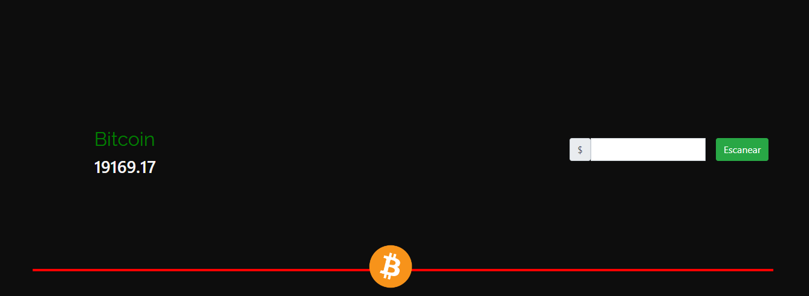

CryptoAPT les da la bienvenida a nuestra Guía de Inicio oficial sobre cripto! Antes de iniciar, nos gustaría transmitir el tipo de público al que está dirigido este documento:
Personas completamente nuevas en cripto
Personas sin experiencia
Personas que quieren saber de que trata todo esto.
Si, no es solo ústed. La cripto nació de la absoluta nada (O eso es lo que todo el mundo cree!) y los primeros días de investigación parece algo inentendible, porque al fin del cabo, lo es. Vamos a abarcar los temas más generales, pero ni nosotros ni nadie, sabe realmente a ciencia cierta como funciona al 100% este mundo y como se mantiene.
Pero antes de iniciar y ver su historia, nos gustaría dejar en claro algunas mentalidades que debería tener para leer y comprender esta guía
La cripto NO es un activo.
No será millonario de un día para el otro. Pero con la constancia sacará una muy buena ganancia.
Probablemente para un argentino esta es la mejor forma de mantener su dinero sin perder el valor.
Ciertos proyectos cripto son arriesgados, hasta el punto de una considerarse una apuesta. Invierta bajo su propio riesgo.
La cripto está muy sujeta a cambios repentinos en su valor. Comprenda que, es imposible predecir cuál va a ser su siguiente movimiento.
Dicho esto y ahora sí; Bienvenidos y buena lectura! El equipo de CryptoAPT espera con ansias que ústed pueda sacar un muy buen provecho de esta guía.
Para entender el término cripto es hora de ubicarnos un poco en la historia y abarcar dos conceptos: La Criptomoneda clásica y la Criptomoneda Moderna.
Aunque no lo parezca, hubo una época clásica de la criptomoneda. Durante los años 80, se popularizó el concepto de criptomoneda a raíz del movimiento CypherPunk. Este arte, defiende el uso de la escritura de claves cifradas que solo el creador sabía descifrar. De esta manera, brindaba confidencialidad absoluta. La idea fue, crear un sistema de pago anónimo y confidencial.
No sería recién hasta una decada después que esta idea tendría un borrador con futuro de expansión. Este borrador se denominó DigiCash, la primera criptomoneda de la que se tiene conocimiento. ¿Su creador? David Chaun. Consistía en un sistema propio de transacciones electrónicas centralizadas, que utilizaban una clave secreta para funcionar. Esto generaba movimientos de dinero mucho más seguros. Después de este proyecto, no se destacó ningún otro de esta época, debido a su sistema centralizado (Osea, que las personas se encuentren físicamente en la misma posición para realizar el intercambio). Lo que perdía el anonimato por completo. Pero no duraría mucho hasta que apareciera la época moderna...
¿Recuerdas 2009? Fue hace bastante, ¿No? En Argentina, destacamos sucesos como la epidemia del dengue nacional, el fallecimiento del ex-presidente de la nación Raúl Alfonsín, entre otros sucesos. Este mismo año, nació el proyecto que tanto revuelo tendría en los años siguientes. Demoslé paso al bitcoin!
Dentro de algunos proyectos nuevos y constantes y otros proyectos parados, destacamos a Bitcoin. Esta moneda fue la primera con un sistema descentralizado, pero... ¿Qué significa esto?
Consideremos como sistema descentralizado a un sistema sutil que permite a los usuarios generar un intercambio de información de manera remota. Para dejarlo más simple, significa poder enviar información desde una punta del mundo a la otra. En el caso de Bitcoin, el intercambio de información son transacciones de dinero. Estas transacciones no son efectuadas por una entidad bancaria, si no que por el propio usuario.
Volvamos a lo que nos compete. Teniendo en cuenta lo que acabamos de decir. ¿Qué es Bitcoin?
Ahora sí. Bitcoin es una moneda virtual (criptomoneda) con un sistema descentralizado que es mantenido por usuarios por el gran sistema de oferta y demanda.
¿Cómo? ¿Oferta y demanda?. Sí, exacto. Al no existir entidades bancarias ni grupos súper-poderosos que mantengan en pié la moneda, su valor se basa en la popularidad que tenga. Es por esto mismo que, tiene tantas fluctuaciones tan repentinas en su costo. Y esta es la base de las criptomonedas actuales.
Dejando esta parte en claro, creemos que ahora se siente por lo menos levemente interesado por el tema; Nos sentimos felices por ello. Ahora, sus primeras preguntas serían: ¿Cómo transfiero dinero? Si no hay una entidad bancaria, ¿Dónde guardo el dinero? Todo esto va a ser respondido en los siguientes modulos.
CryptoAPT comprende que en este momento ústed puede estar algo confuso. Recomendamos leer este módulo 1 varias veces para poder terminar de comprender.
¡Felicidades! Aunque no lo crea, acaba de comprender la criptomoneda. Probablemente hasta hace uno o dos días solo pensaba en esto como un juego de internet con base económica.
Sigamos con temas más complejos. Nuevamente, recomendamos leer la guía varias veces, porque al principio puede ser confusa.
¿Cómo puedo transferir mi dinero a otro usuario? || Veremos como responder esta pregunta en este modulo. Entenderá el concepto de tener un monedero o una billetera virtual que tendrá dinero que físicamente no existe pero que tiene un valor.
Como primero de todo, y haremos enfásis nuevamente. No hay entidades bancarias dentro de este mundo. Por lo que no tendrá una cuenta de ahorro. En cripto, esta "cuenta de ahorro" es denominada Monedero virtual. El Monedero virtual es una clave de acceso que contendrá su información, y su dinero (Es bastante más tecnico, pero como es una guía simple, creemos que es la mejor definición). Esta clave es la que ústed utilizará para transferir dinero a otras cuentas.
Dicho esto, podemos considerar que tu cuenta bancaria dentro del mundo cripto es tu clave privada. ¿Cuáles son los beneficios de tener una clave?
Y además, CryptoAPT encontró una sola desventaja que puede hacer un cambio importante
Su siguiente pregunta sería: ¿Dónde y cómo obtengo mi billetera virtual?
Hora de que realmente salga a actuar. Bienvenido a las plataformas de compra. Si bien nosotros le comentamos que no existen entidades bancarias (porque no las hay), si existen plataformas que permiten administrar su billetera virtual. Pero para que comprenda, vamos a explicarlo:
Una plataforma de compra es una página o sistema que le permite administrar su dinero virtual. NO es una entidad bancaria, ya que nadie pedirá por sus datos, y de por sí la página nunca se interpondrá en su transacción. A continuación, ventajas y desventajas de esta plataforma:
A continuación, nombraremos brevemente dos plataformas de compra. Una que nos permite utilizar dinero nacional para cargar cripto. Y otra internacional, que deberemos usar dólares u otras monedas internacionales.
SatoshiTango -- Nuestra opción nacional
SatoshiTango es una plataforma de compra que nos permite cargar cripto con pesos argentinos desde transferencia bancaria o paypal. Lo malo, es que se retira el dinero únicamente por paypal y solo nos permite comprar muy pocas monedas.
Binance -- La opción más confiable
Si bien, ninguna mención es paga. Desde CryptoAPT creemos que Binance es la mejor opción para poder administrar nuestro dinero virtual. Esto es porque nos da muchisimas más funciones que SatoshiTango, como P2P, un sistema propio de inversión, y poder invertir en muchísimas más monedas.
Ahora que sabe como funciona su billetera, y sabe que hacer con su dinero y donde guardarlo, es hora de invertir. ¿No? ¡No tan rápido! Bitcoin no es su única opción. Existen miles de proyectos cripto, pero veamos su clasificación y los principales.
Bienvenido a lo que probablemente le esté interesando. Pero también recomendamos muchísimo leer ambas opciones, ya que la siguiente es igual de interesante y nos brinda un montón de ventajas.
Las monedas de inversión, tal como su nombre lo indican, son proyectos creados para poder sacar una ganancia (¡O una pérdida!) de dinero. Nos basaremos en la mecánica de inversión en la bolsa. Si usted compra una acción cuando esté barata, y la vende cuando esté valuada, habrá sacado una buena diferencia de dinero. El mismo concepto es aplicado a cripto. Si ústed compra barato, y vende caro, habrá ganado mucho dinero. Ahora, puede perder dinero, puede comprar barato y vender aún más barato, y habrá perdido.
Recomendamos no comprar mucho de esta cripto. Ya que puede considerarse una apuesta, ya que como le dijimos, su valor es decretado por la popularidad. Si de la nada el proyecto se hace popular, automáticamente tendrá ganancias. Pero si el proyecto cae o tiene mala fama, habrá perdido muchísimo dinero. Esta popularidad es absolutamente imposible de predecir. Encontrará monedas como: Bitcoin, Cardano, Solana o Ripple.
Bienvenido a las monedas estables. Tal y como su nombre lo indica, es tan simple como proyectos que fueron creados y programados para mantener siempre su mismo costo. No sacará ganancia ni perderá tampoco, de hecho; Estos proyectos recrean el dólar estadounidense. Esto trae algunas ventaja
Ejemplos de esta son: USDCoin y USDTether
¡Bienvenido al último modulo! ¡Ya sabe todas las básicas de la cripto! Ahora vamos a enseñarle por qué debería usar nuestra página, y como sacarle provecho.
Ahora sí. Ahora que ústed entiende las básicas de la cripto, es hora de que nosotros le enseñemos el potencial de nuestra herramienta.
CryptoAPT es una herramienta web que fue desarrollada por el scripter de las funcionalidades; Leonardo Gómez Waipan (Véase Equipo de trabajo ). Esta herramienta nos brindará una recomendación de qué hacer con nuestro dinero en Cripto.
Nuevamente, y como "disclaimer". Como dijimos al principio y lo repetimos durante toda su lectura: La cripto tiene una fluctuación tan alta, que no se puede predecir el siguiente minuto. Lo que hace CryptoAPT es darte una recomendación según sus resultados de comparación de sus últimas 3 semanas.
Ahora sí, explicaremos como funciona:
Lo primero de todo, es ubicarnos en la página principal; Puesto que, la herramienta CryptoAPT se personalizó para poder brindar recomendaciones de 20 monedas actuales distintas. Para poder acceder a cualquiera de estas monedas, deberemos dirigirnos al menú. Lo encontrarán en la página principal bajo el nombre de "Analizador".
¡Bienvenido al Menú! CryptoAPT diseñó su algoritmo y fue aplicado a 20 monedas distintas. No destacamos ninguna, puesto que debido a su popularidad, creemos que cualquiera es una buena opción. Le brindamos la libertad que elija la moneda que quiera. Pero para el ejemplo de uso, nosotros usaremos Bitcoin
¿Ya tiene la moneda? ¡Perfecto! Una vez dentro, pudo encontrarse con algo parecido a esto, y vamos a explicar que es cada cosa.
A su izquierda, pudo encontrarse con el nombre de la moneda que actualmente está visitando (En nuestro caso, Bitcoin). A la derecha, se encuentra la herramienta en sí, que ahora explicaremos como usarla. Y abajo, se encontró con el logo de la moneda, y si mira un poco más abajo, información de la moneda como su historia.
Como habíamos dicho, a la izquierda se econtrará el nombre de la moneda que actualmente está visitando, y abajo, encontrará su precio real en vivo. Este precio se irá actualizando a medida que ústed recargue la página, y en el caso que se encuentre en Bitcoin. No, no es algo creado por nosotros, realmente la moneda puede moverse más de 25 dólares en su valor por segundo.
A su derecha, encontrarás el analizador creado por el scripter anteriormente mencionado. Este analizador va a tomar resultados según el valor de hace 7 días exactos atrás, y 14. ¿Esto que significa?
Supongamos que ústed se encuentra en un 23 de mayo de 2023 a las 10 de la mañana. En el momento que ústed utilice el analizador, para poder dar una recomendación, el analizador comparará su valor de ese momento exacto, con el del 16 de mayo de 2023 a las 10 de la mañana, y el valor del 9 de mayo de 2023 a las 10 de la mañana.
De este modo, el analizador tendrá un buen márgen de tiempo para entender como está funcionando la cripto en ese momento, y brindará un veredicto final. Pero pasemos a cómo utilizar esto.
Tal y como vió, hay un cuadro de texto junto a un botón que dice Escanear. Lo que debe colocar en ese cuadro de texto es el costo por el que a ústed no le interesa la moneda. ¿A qué nos referimos con esto?
Supongamos de ejemplo que ústed tiene 250 dólares en Cardano. Quiere realizar una transacción, pero hay una fracción de la moneda que a ústed no le interesa. Supongamos que esta fracción es equivalente a 20 dólares. Lo que ústed le dirá al analizador, es que empiece a decidir por un margen por encima o por debajo de estos 20 dólares, ya que a ústed no le modifica en lo absoluto por realizar una transacción mucho mayor.
Ahora sí, lector. ¡Clickee Escanear! Le brindará tres posibles veredictos finales, de los cuales hablaremos ahora.
Si a ústed le salta este veredicto, significa que el analizador comprendió que no hubo casi nada de diferencia entre el valor actual, y el de una y dos semanas atrás respectivamente. Recomendará no realizar ninguna transacción hasta que no ocurra algún suceso, ya que no supondrá ni pérdida ni ganancia.
Si a ústed le salta este veredicto, significa que el analizador comprendió que hubo una pérdida reciente en la moneda. El analizador recomendará lo que dijimos anteriormente en la guía: "Compra barato, vende caro".
Si a ústed le salta este veredicto, ¡Está de suerte! El analizador comprendió que hubo una buena subida en su valor. Cualquier transacción de venta se considerará negocio y le generará ganancias positivas a ústed.
¡Muchísimas gracias por leer esta guía! El equipo de CryptoAPT invirtió muchísimo tiempo en poder brindarle toda esta información para que ústed incremente sus conocimientos.
Si ústed aprendió algo nuevo el día de hoy, significa que todo este tiempo ha valido la pena.
Sin mucho más que decir, con el botón de abajo podrán volver a la página principal. ¡Gracias por la lectura!
Regresar a la página principal